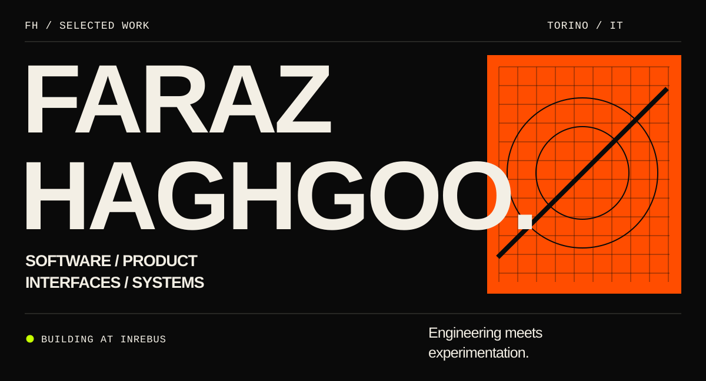
I’m Faraz Haghgoo, a developer and product builder based in Turin, Italy. I build digital products and complex interfaces where engineering, interaction and experimentation meet.
Currently working on professional software at inRebus. My public repositories are one part of that work.
GitHub ↗ · LinkedIn ↗
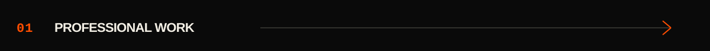
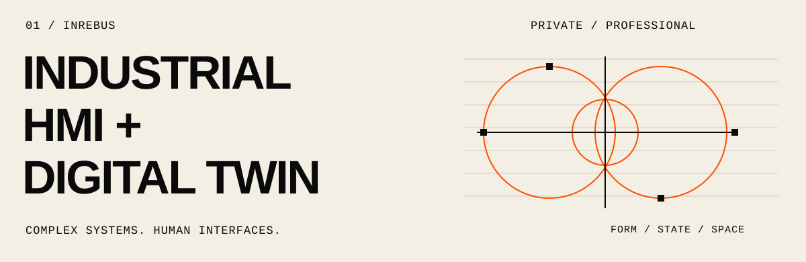
Industrial HMI / Digital Twin
inRebus · Professional · Private repository
Working on an industrial human–machine interface and digital-twin environment: making complex systems understandable through clear interfaces and technical visualization.
Interface engineering · Interaction · Systems thinking
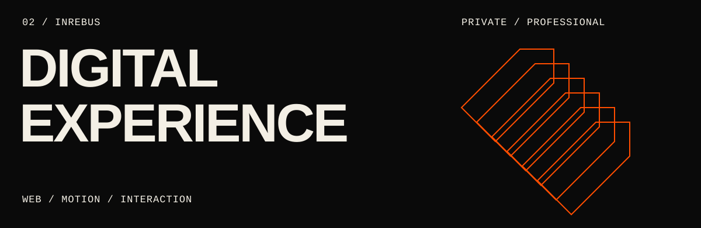
inRebus / Digital experience
inRebus · Professional · Private repository
Developing and redesigning the company’s web experience, connecting visual identity, responsive interfaces and purposeful motion.
React · TypeScript · Vite · GSAP
Professional covers are abstract artwork. Source code and implementation details remain private.
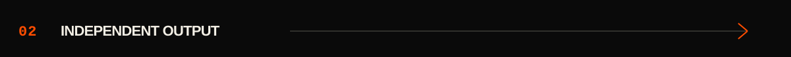
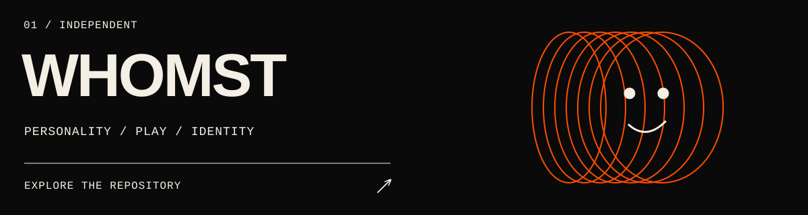
A playful personality engine that matches answers to characters through vector-based scoring. The initial build connects the quiz, results and sharing, with server-side scoring and dynamic social images.
Next.js · TypeScript · PostgreSQL · Prisma · Redis
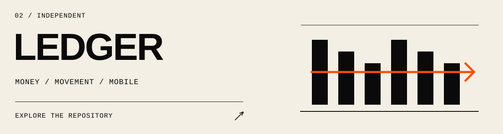
Manual-first personal finance for cash spending, income and peer transfers. Built for iOS and Android, with optimistic, offline-tolerant writes and a clear distinction between spending and moving money.
React Native · Expo · TypeScript · Supabase · TanStack Query
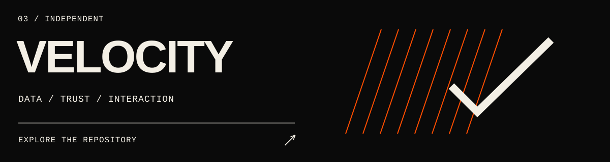
A landing-page experience for data verification and secure data rooms. Combines expressive motion and responsive interfaces with a working waitlist backend.
Next.js · React · TypeScript · GSAP · Framer Motion
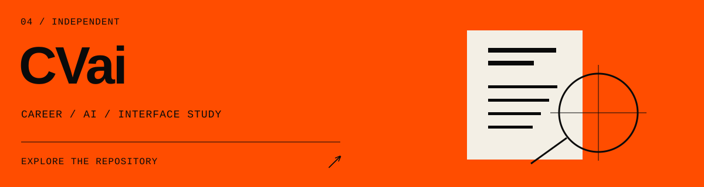
A career-product interface prototype exploring CV feedback, job matching and career insights. Uses mock data to study the experience of AI-assisted career tools.
React · Vite · Tailwind CSS · SVG
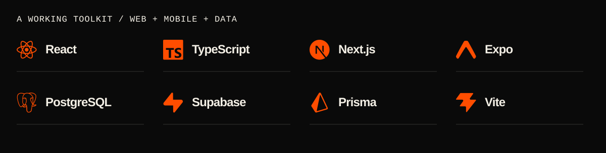
Exploring: AI-native products, human–computer interaction and product architecture.
How I build: understand the problem → shape the system → refine the interaction → ship and iterate.
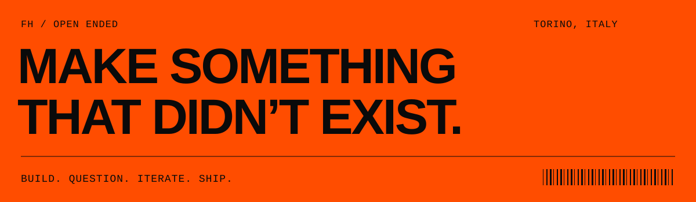
GitHub ↗ · LinkedIn ↗ · Turin, Italy